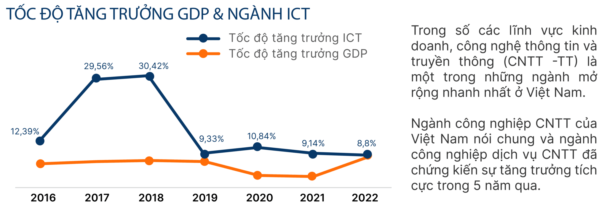
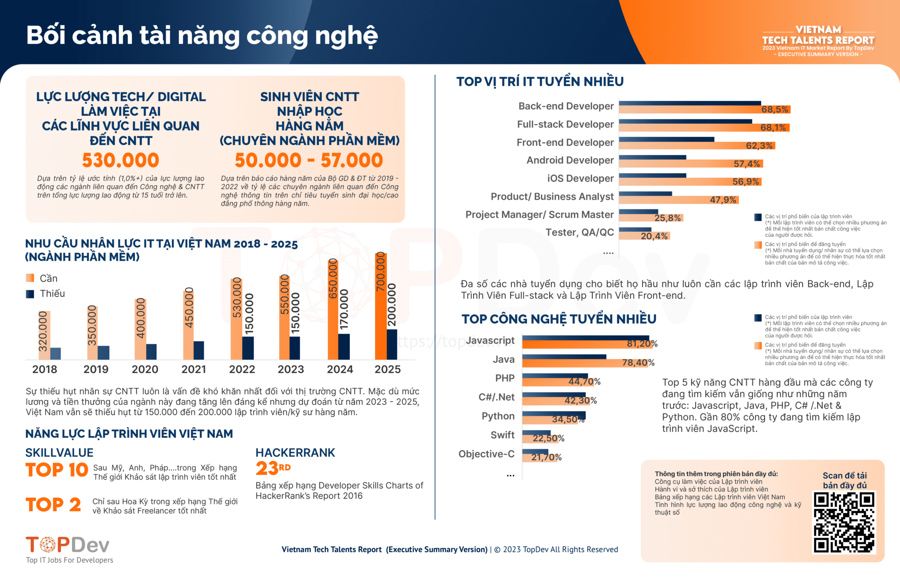
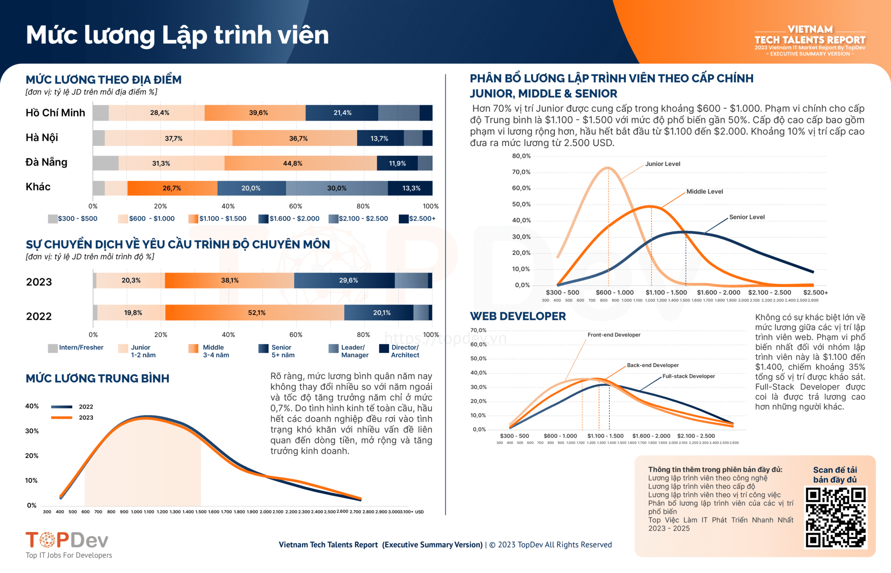

TP.HCM, Sep 3, 2023
Báo cáo thị trường IT Việt Nam năm 2023: Điểm sáng trong phục hồi kinh tế gắn liền với chương trình đổi mới sáng tạo và chuyển đổi số quốc gia Việt Nam đã và đang nổi lên như một nhân tố chủ chốt trong bối cảnh công nghệ toàn cầu, thu hút đầu tư đáng kể và thúc đẩy tăng trưởng nhanh chóng trong những năm gần đây. Trong bối cảnh nền kinh tế quốc gia đang phục hồi và phát triển, quan hệ hữu nghị, hợp tác song phương và đa phương với các nước phát triển đang là đường lối và chủ trương chiến lược của Đảng và Nhà nước. Cùng với đó, việc đầu tư áp dụng Công nghệ & Chuyển đổi số vào doanh nghiệp được phát triển mạnh dẫn đến việc Tuyển dụng nhân tài công nghệ trở thành một trong những mối quan tâm chính của các Nhà quản lý nhân sự và chủ doanh nghiệp hiện nay. Điều đó càng đặc biệt được chú trọng trong bối cảnh cán cân cung – cầu trong tuyển dụng nhân sự Công nghệ ngày càng thay đổi và trở nên cạnh tranh mạnh mẽ hơn.
Tổng quan tình hình ngành Công nghệ thông tin 2023 Mối quan hệ hợp tác chiến lược Việt Nam – Mỹ sau chuyến viếng thăm của Tổng thống Joe Biden trong bối cảnh nền kinh tế quốc gia đang phục hồi và phát triển đặt ra nhiều cơ hội và thách thức cho các doanh nghiệp trong nước thực hiện đầu tư và sáng tạo trong chính sách tăng cường chuyển đổi số quốc gia. Trong số các lĩnh vực kinh doanh, công nghệ thông tin và truyền thông (CNTT-TT) là một trong những ngành mở rộng nhanh nhất ở Việt Nam. Ngành công nghiệp CNTT của Việt Nam nói chung và ngành công nghiệp dịch vụ CNTT đã chứng kiến sự tăng trưởng tích cực trong 5 năm qua và đạt được những thành tựu đáng kể. Theo số liệu của Tổng cục Thống kê, tình hình đăng ký doanh nghiệp tháng 8/2023 đã khởi sắc hơn tháng trước, có hơn 14 nghìn doanh nghiệp thành lập mới với số vốn đăng ký là 135,3 nghìn tỷ đồng và số lao động đăng ký 79,9 nghìn lao động, tăng 2,3% về số doanh nghiệp, tăng 6,6% về vốn đăng ký và tăng 1,2% về số lao động so với tháng 7/2023. Nhằm đẩy mạnh triển khai thực hiện Chương trình chuyển đổi số quốc gia đến năm 2025 và Chiến lược quốc gia về phát triển doanh nghiệp công nghệ số Việt Nam đến năm 2030, chính phủ đang rất tập trung xây dựng kế hoạch và bố trí nguồn lực hỗ trợ doanh nghiệp, đặc biệt là các doanh nghiệp nhỏ và vừa trên địa bàn thực hiện chuyển đổi số, đổi mới sáng tạo, chuyển giao công nghệ phù hợp. Ngoài ra, Việt Nam cũng đang thúc đẩy hệ sinh thái các đơn vị hỗ trợ cho các nhà sản xuất chip góp phần giúp Việt Nam trở thành một trong những quốc gia có nhiều hoạt động sản xuất chip trong khu vực. Ngày càng có nhiều doanh nghiệp Việt Nam có khả năng tham gia vào ngành công nghiệp hỗ trợ sản xuất chip với lực lượng hiện tại khoảng 50 doanh nghiệp trong nước và hơn 5.000 kỹ sư Việt Nam tham gia thiết kế chip. Qua đó, việc xây dựng hệ sinh thái doanh nghiệp hỗ trợ và đội ngũ kỹ sư thiết kế chip, kỹ sư điện tử sẽ giúp Việt Nam từng bước nâng cấp và tham gia sâu hơn vào chuỗi giá trị vi mạch toàn cầu.  Hình 2: Tốc độ tăng trưởng GDP & Ngành ICT theo Báo cáo thị trường IT Việt Nam TopDev Quý 3 2023 Trong số các lĩnh vực kinh doanh, công nghệ thông tin và truyền thông (ICT) là một trong những lĩnh vực phát triển nhanh nhất ở Việt Nam. Ngành CNTT Việt Nam nói chung và ngành dịch vụ CNTT có sự tăng trưởng tích cực trong 5 năm qua. Doanh thu lĩnh vực công nghiệp công nghệ thông tin (ICT) của Việt Nam trong 5 năm qua liên tục tăng trưởng cao, từ gần 103 tỷ USD năm 2018 lên hơn 124,67 tỷ USD năm 2020 và 136,15 tỷ USD vào năm 2021. Trong đó, kim ngạch xuất khẩu phần cứng, điện tử năm 2022 ước đạt 136 tỷ USD, tăng 11,6% so với năm 2021; xuất siêu hơn 26 tỷ USD. Trong bảng xếp hạng Chỉ số Đổi mới sáng tạo toàn cầu GII 2021, Việt Nam xếp thứ 44 trên 132 quốc gia/nền kinh tế. Nhu cầu nhân lực thị trường IT Việt Nam 2023  Hình 3: Báo Cáo Thị Trường IT Việt Nam 2023 của TopDev về nhu cầu nhân lực ngành CNTT 2023 Theo các số liệu thống kê từ năm 2018 – 2023 được đưa ra, nhu cầu nhân lực cho ngành công nghệ thông tin tại Việt Nam vẫn đang tăng cao liên tục dù trong bối cảnh kinh tế nhiều biến động. Dựa trên Báo cáo về thị trường IT Việt Nam 2023 của TopDev, đến năm 2025 Việt Nam sẽ còn cần đến 700.000 nhân lực trong ngành công nghệ thông tin. Trong khi đó, số lượng lập trình viên hiện tại của Việt Nam mới chỉ đạt khoảng 530.000 người. Thực tế, số lượng ngành học về công nghệ thông tin ở các trường đại học đang mở rộng ngày càng nhiều cũng như số lượng cử nhân tốt nghiệp chuyên ngành này vẫn tăng cao qua mỗi năm, tại sao vẫn có sự chênh lệch này? Sự thiếu hụt này chủ yếu là do trình độ của lập trình viên và yêu cầu doanh nghiệp đặt ra vẫn chưa thực sự cân bằng với nhau. Theo báo cáo, trong số hơn 57.000 sinh viên công nghệ thông tin tốt nghiệp mỗi năm chỉ có khoảng 30% lực lượng nhân sự đáp ứng được những kỹ năng và chuyên môn yêu cầu thực tế mà doanh nghiệp đặt ra, 70% còn lại cần được bố trí đào tạo thêm tại doanh nghiệp trong 3 – 6 tháng để đạt hiệu quả công việc tương ứng. Cuộc cạnh tranh khó khăn hơn với nhiều sự thay đổi trong nhu cầu tuyển dụng & thị trường lao động Nhu cầu tuyển dụng trong lĩnh vực IT vẫn luôn trên đà tăng trưởng nhanh và mạnh. Do sự thay đổi và ảnh hưởng của tình hình kinh tế – xã hội chung cũng như dựa trên các kỹ năng cứng và kỹ năng mềm mà lập trình viên sở hữu, mức lương cũng như trình độ sẽ được phân loại một cách rõ ràng hơn trong thời gian tới.  Hình 4: Báo Cáo Thị Trường IT Việt Nam 2023 của TopDev về nhu cầu nhân lực và mức lương Lập trình viên ngành CNTT 2023 Bên cạnh kỹ năng chuyên môn vững vàng, những kỹ năng mềm như khả năng tư duy phát triển, giao tiếp, quản lý thời gian, trình độ ngoại ngữ,… cũng là yếu tố quan trọng trong quá trình tuyển chọn và đánh giá ứng viên của nhà tuyển dụng. Sự biến động và thay đổi nhanh của Công nghệ thông tin và khoa học kỹ thuật cũng như sự đổi mới liên tục của công nghệ đòi hỏi ở các lập trình viên khả năng thích ứng nhanh và nhạy bén với mọi sự biến đổi. Các lập trình viên cần nâng cao kỹ năng công nghệ của bản thân với sự hiểu biết về các công nghệ mới và đột phá như Cybersecurity, DevOps, AI và Machine Learning, Cloud Computing,…